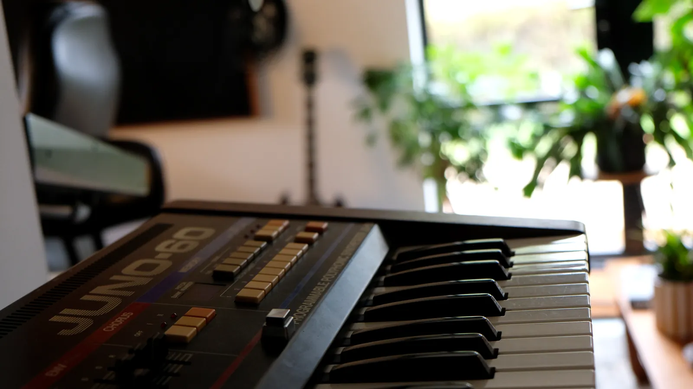

Recording, mixing & production.
A professional recording studio with two live tracking rooms and a rare 1972 Yamaha PM1000 console. Analogue warmth with a flexible, modern workflow.
Space to play live, and the control to get it right.
The studio has two live tracking spaces. The large room fits a full live band. The smaller room gives you more acoustic control for drums, vocals and amps. Four large and four small movable gobos let us shape the sound around your set-up, and we'll plan the best use of the space for your project with you.
There's a selection of microphones, amps, guitars and synths for you to use. We have the best of both worlds when it comes to routing: track through the analogue desk for character, or go straight into UAD Apollo interfaces for a clean digital path.
- Recording, mixing and production
- Live band tracking and live sessions on video
- Songwriting, pre-production and rehearsal


The “Japaneve”: a 1972 Yamaha PM1000
Built in 1972 to rival the Neve consoles of the same era, the PM1000 gives you 16 warm analogue channels. Our desk came over from Electric Lady Studios in New York.
Full kit list
Our gear changes over time: new pieces arrive and some are on loan. If your project needs something specific, just ask.
Console & interfaces
- Yamaha PM1000 mixing desk (16 ch)
- UAD Apollo x16
- UAD Apollo 8p
- UAD Apollo Twin Duo
- UAD Satellite Quad
- UA Twinfinity
- Focusrite Scarlett OctoPre
- ADAM A7X monitors
Microphones
- AKG C414 (matched pair)
- Townsend Labs Sphere
- Shure SM7B
- Sennheiser MD 421 ×2
- Rode NT1-A
- SE 8 (matched pair)
- SE 5600a
- Shure Beta 52 & AKG D112
- Shure SM57 ×5
Synths & keys
- Roland Juno-60
- Sequential Prophet X
- Moog Sub Phatty
- Crumar Seven
- Roland A-88 weighted controller
- Komplete Kontrol S49
Drums
- Yamaha Oak Custom
- Yamaha Stage Custom
- Yamaha Stage Custom snare
- Yamaha Akira Jimbo signature snare
- Various cymbals
Guitars & bass
- Les Paul Standard
- Höfner Senator (1959)
- Squier Stratocaster
- Telecaster-style electric
- D-18 style acoustic
- Westfield RBJ67 bass
- Epiphone SG bass
- Ukulele
Amps
- Fender Blues DeVille 4×10
- Laney VC30
- Yamaha YTA-95
- Matamp (bespoke)
- Plenty of pedals
It's always a pleasure making music at Up Top! The environment Dan creates is super relaxed and inspiring and the results are always brilliant.
Up Top is a brilliant space for musical creativity, whether that's for writing, production, mixing or rehearsal. The environment and feel of the place is fantastic.
Let's talk about your record.
Tell us about the project, the line-up and your timeline, and we'll plan the session with you.